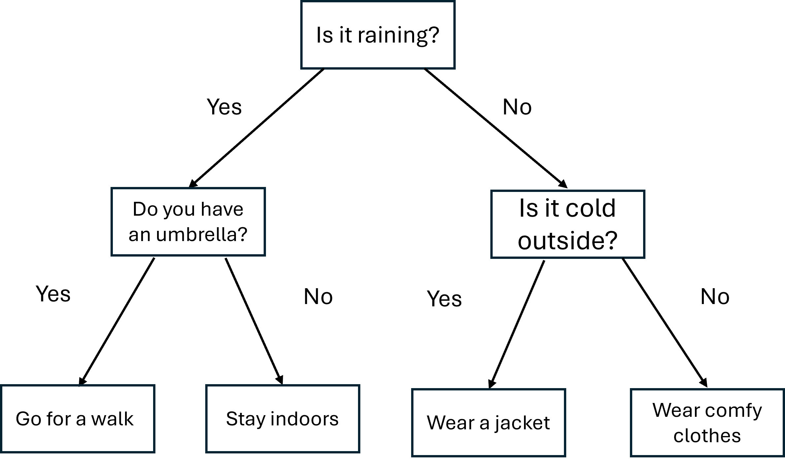
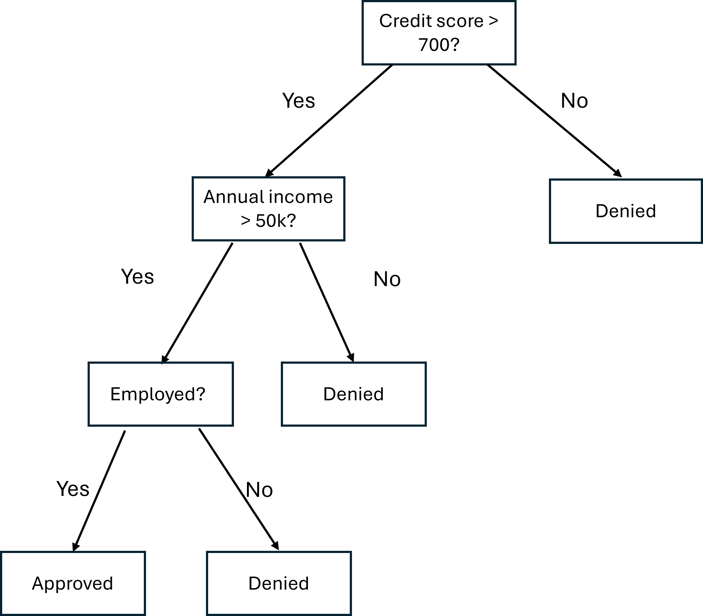
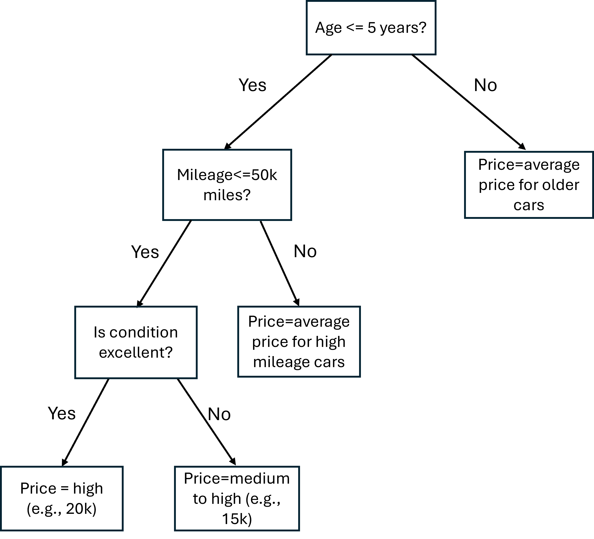
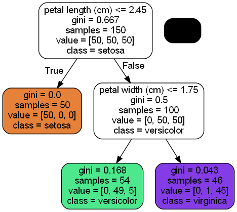
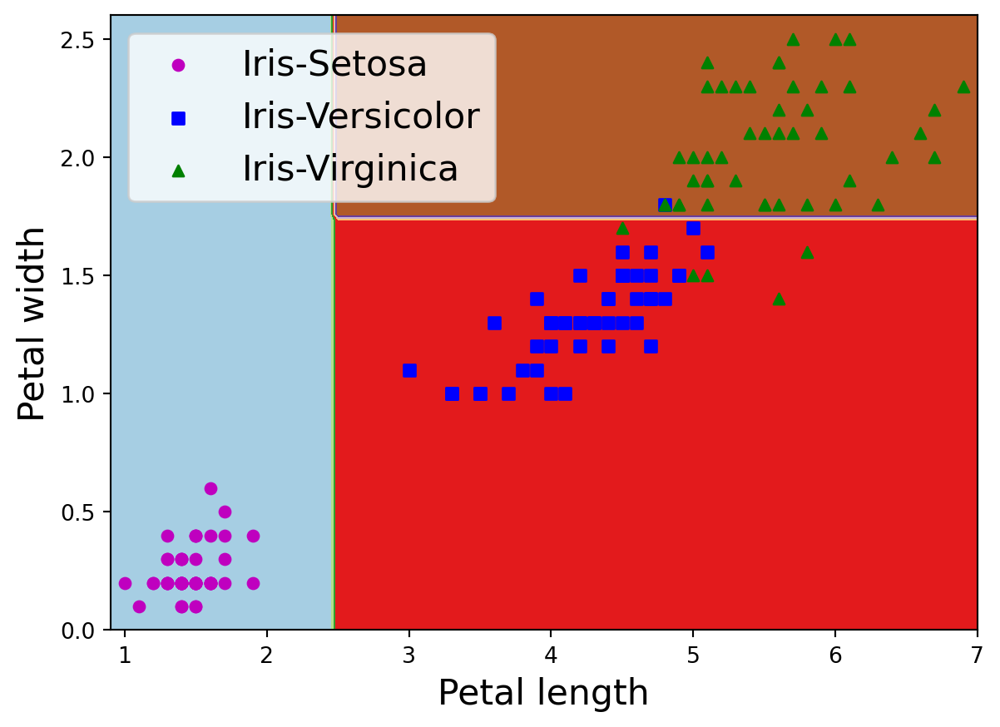
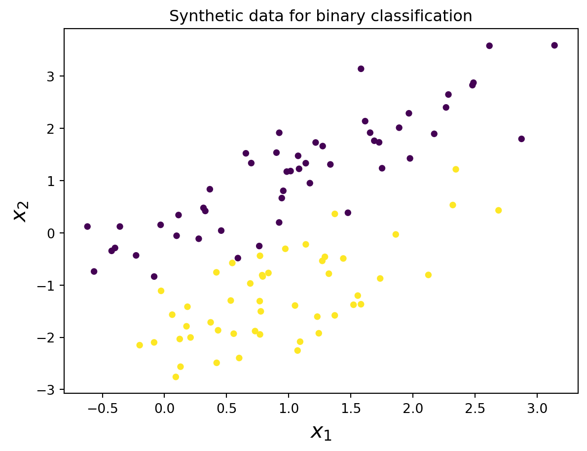
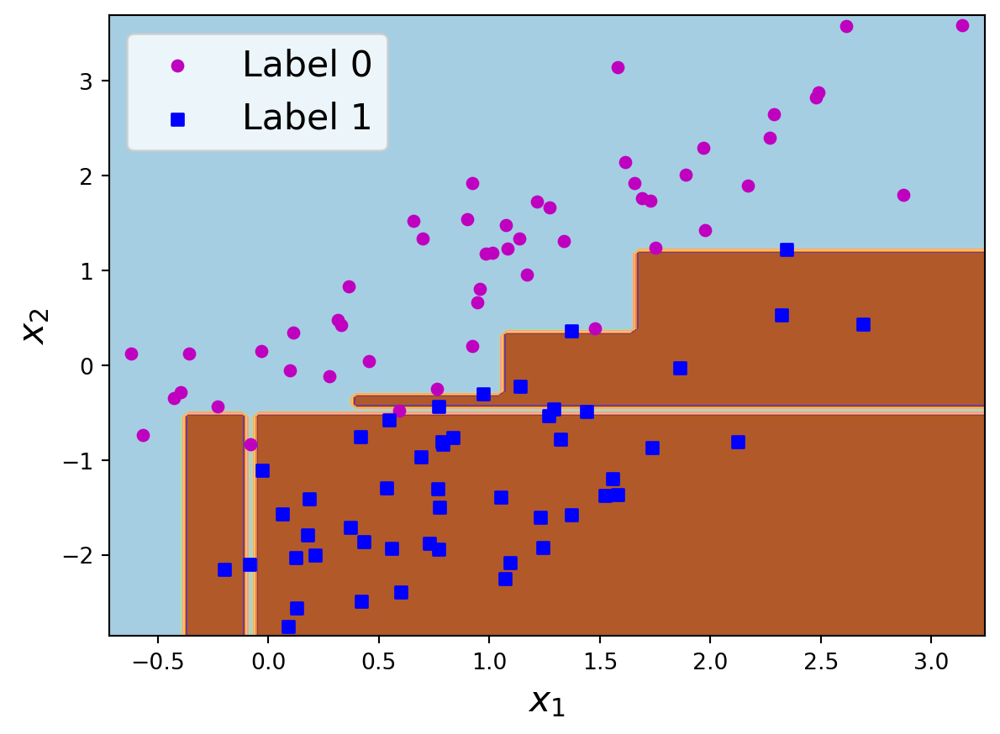
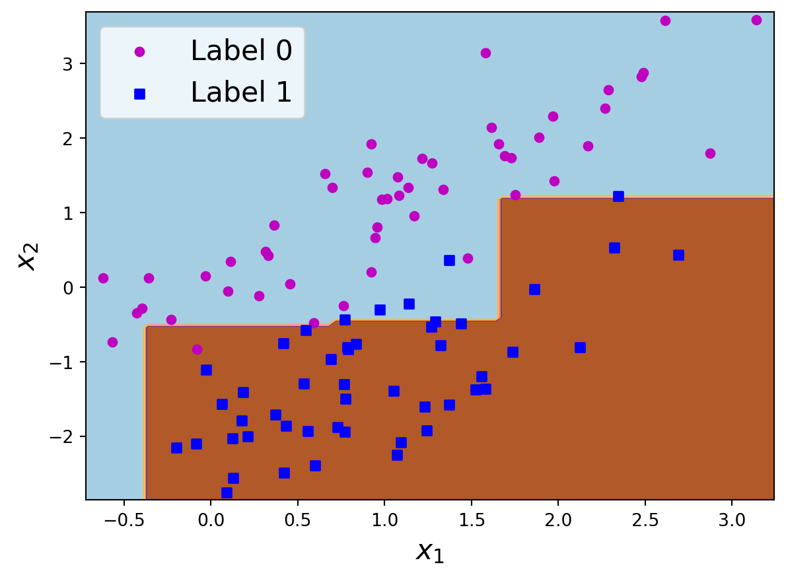
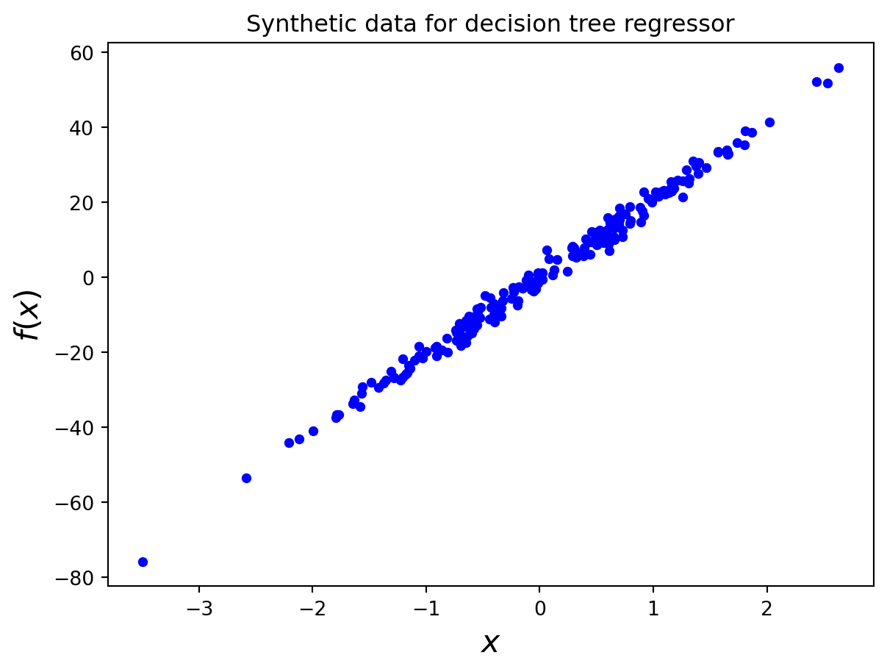

A decision tree is a supervised machine learning algorithm that is used for both classification and regression tasks. It splits the data into subsets/branches recursively based on feature values. Each branch of the tree-like structure serves as a decision rule, and each ending point of the tree (called a leaf) leads to a prediction. Given a new data instance, one can start from the root node of the tree (that contains all the data points), follow the branches (decision rules), reach internal nodes (called children), and finally reach a leaf to make predictions or decisions. The following diagram shows a decision tree to decide weather and how to go for a walk.

Here is another example that shows how a decision tree can help determine if a credit card applicant should be approved or denied.

Decision tree can also be used to predict continuous quantities. The following diagram shows how a decision tree can help predict used car prices.

Decision Trees for Classification
To train a decision tree, the main goal is to decide which feature to choose at a node and at what value of the feature the node is divided. To this end, we need to define a measure that can be used to compare different choices and values of features for divisions. A greedy optimization approach is typically used, beginning with a single root node that represents the entire training dataset. The tree is then grown incrementally by adding nodes one at a time. At each step, there are a set of candidate features and their values in the input space for the split, and once they are chosen, a pair of leaf nodes will be added to the current tree corresponding to the split. Let \(\{(\boldsymbol{x}_1, y_1), \dots, (\boldsymbol{x}_N, y_N)\}\) be a training dataset, where \(y_i\in\{1,2,\dots, K\}\), \(1\le i\le N\). Assume at a certain step, there has been a collection of leaf nodes \(L=\{L_1, L_2,\dots, L_M\}\), For each of the leaf nodes \(L_i\), and a candidate criterion for the split, \(c\), there will be two children for \(L_i\), denoted by \(L_i^0(c)\) and \(L_i^1(c)\). To quantify the performance of the split, there are two commonly used measures, namely, information gain and Gini index (also known as Gini impurity). To define information gain, we first define the information entropy (or just entropy) as
\[\begin{equation*}
\Eta(L_i) = -\sum_{k=1}^Kp_k\log{p_k}
\end{equation*}\] where \(p_k, k=1,\dots,K\) is the proportion of data points in \(L_i\) that belong to class \(k\), and \(\log\) is the natural logarithm (base 2 is also commonly used). For each of the two children of \(L_i\), we can compute \(\Eta(L_i^0(c))\) and \(\Eta(L_i^1(c))\) in the same way. The information gain can then be defined as the difference between the entropy of \(L_i\) and the weighted some of the entropies of its two children:
\[\begin{equation*}
\text{IG}(L_i, c) = \Eta(L_i) - \sum_{k=0}^1 \frac{|L_i^k(c)|}{|L_i|}\Eta(L_i^k(c))
\end{equation*}\]
where \(|\cdot|\) denotes the number of data points associated with a node. Hence the weights are simply the proportion of data points in the children to the total number of instances in the parent. The larger the information gain, the purer the two children resulting from a split. Notice that if a split results in two pure children, then both children nodes have an entropy of \(0\). If a node has the same proportion of each class (i.e., \(p_k=\frac{1}{K}\), \(1\le k\le K\)), then its entropy achieves a maximum (see Exercise 6-1).
Another way to measure a potential split criterion \(c\) is to evaluate the Gini index, which is defined as
\(G(L_i)\) will be equal to \(0\) if \(L_i\) is pure, and it is largest when each class has the same proportion of the data instances (see Exercise 6-2). To evaluate the performance of the split criterion \(c\), we calculate the weighted Gini index for the two children nodes:
\[\begin{equation*}
G(L_i, c) = \sum_{k=0}^1\frac{|L_i^k(c)|}{|L_i|}G(L_i^k(c))
\end{equation*}\]
and we pick the best split that leads to the smallest \(G(L_i, c)\). The process continues until certain stopping criterion is satisfied, for example, all leaf nodes are pure, or the depth of the tree (number of nodes along the longest path from the root node down to the farthest leaf node) reaches a preset value.
Notice that the algorithm works for both discrete and continuous features. For the latter, a discretization of the feature space needs to be performed before applying the algorithm.
Exercise 6-1
Verify that a node’s information entropy achieves its maximum if each of the \(K\) classes has the same proportion of its data instances.
Verify that a pure node’s information entropy is \(0\).
Exercise 6-2
Verify that a node’s Gini index achieves its maximum if each of the \(K\) classes has the same proportion of the data instances.
Verify that a pure node’s Gini index is \(0\).
Decision Trees for Regression
The algorithm for building a decision tree for regression is similar to that for classification. The only difference is that we need to define a new performance measure for a split. Given the training dataset \(\{(\boldsymbol{x}_1, y_1), \dots, (\boldsymbol{x}_N, y_N)\}\), assume we have obtained a collection of leaf nodes \(L=\{L_1, L_2,\dots, L_M\}\). For a node \(L_i\) and a candidate criterion for the split, \(c\), the resulting two children nodes are \(L_i^0(c)\) and \(L_i^1(c)\). Predictions of the target corresponding to a children node should be made by taking the average of all the \(y_i\)’s of those data points located in the node, which is equivalent to minimizing the sum-of-squares error in the node (see Excercise 6-3). Then, the optimal choice of \(c\) will be the one that leads to the smallest residual sum-of-squares error.
To stop the algorithm, we impose some stopping criterion, e.g., the reduction of residual sum-of-squares error falls below some threshold, or another one mentioned in the case of classification.
The following figure shows such an example, where \(\boldsymbol{x} = (x_1,x_2)\), i.e., the feature space is two-dimensional. The first step splits the entire feature space into two regions depending on \(x_1<x_{11}\) or not; the second steps splits the region \(\{(x,y)|x<x_{11}\}\) into two subregions labeled 1 and 2, depending on \(x_2<x_{21}\) or not; the third step divides the region \(\{(x,y)|x>x_{11}\}\) into two subregions depending on \(x_2<x_{22}\) or not, and the resulting two subregions are further divided into regions 3 and 4, and 5 and 6, respectively, depending on if \(x_1<x_{12}\) and \(x_1<x_{13}\).
Exercise 6-3
Show that taking the average of all the \(y_i\)’s of the data points located in a node as the predicted target is equivalent to minimizing the sum-of-squares error in the node.
Tree Pruning
To avoid overfitting and increase generalization of decision trees, in the training process, it is a common practice to build a deep tree (e.g., to its maximum depth), and then trim the branches that contribute the least to the model’s predictive power. One commonly used method is the weakest link tree pruning method (also known as cost complexity pruning) Assume a large tree has been built. To apply weakest link tree pruning, we evaluate each subtree in the decision tree for its contribution to the tree’s performance, for example, using the misclassification rate for classification trees or residual sum-of-squares for regressin trees. Once we identify the “weakest link”, i.e., the subtree, if removed, that leads to the smallest increase in the error (misclassification rate or residual sum-of-squares), the weakest link is pruned (removed) from the tree. The process is repeated iteratively until a stopping criterion is satisfied, e.g. the smallest increase in error by removing a weakest link is bigger than a threshold.
Example 6-1
Build a decision tree classifier for the Iris Dataset to classify virginica and non-virginica. Use petal length and petal width as features.
import numpy as npfrom sklearn import datasetsfrom sklearn.tree import DecisionTreeClassifierfrom sklearn.tree import export_graphvizimport matplotlib.pyplot as plt%matplotlib inlineimport graphvizimport pydotplusfrom IPython.display import Image# Load the datairis = datasets.load_iris()# Use sepal length and width as featuresX = iris["data"][:, 2:] # sepal length and width# 0: 'setosa', 1: 'versicolor', 2: 'virginica'y = iris.target# Build a decision tree. By default, it uses Gini indextree_clf = DecisionTreeClassifier(max_depth=2, random_state=32)tree_clf.fit(X, y)
In a Jupyter environment, please rerun this cell to show the HTML representation or trust the notebook. On GitHub, the HTML representation is unable to render, please try loading this page with nbviewer.org.
# Visualize the trained decision tree# Export the tree to a dot filedot_data = export_graphviz(tree_clf, out_file=None, feature_names=iris.feature_names[2:], class_names=iris.target_names, rounded=True, filled=True)# Convert the .dot file to a graphgraph = pydotplus.graph_from_dot_data(dot_data)# Show the graphImage(graph.create_png())

# plot decision boundary# generage gridx1 = np.linspace(X[:,0].min()-0.1, X[:,0].max()+0.1, 100)x2 = np.linspace(X[:,1].min()-0.1, X[:,1].max()+0.1, 100)X1, X2 = np.meshgrid(x1, x2)# flatten X1 and X2r1, r2 = X1.flatten(), X2.flatten()# make r1 and r2 2Dr1, r2 = r1.reshape((len(r1), 1)), r2.reshape((len(r2), 1))# horizontally stack r1 and r2grid = np.hstack((r1,r2))# now grid is a feature matrix# get predicted labels for gridyhat = tree_clf.predict(grid)# reshape yhat so that it has the same shape as X1 and X2ZZ = yhat.reshape(X1.shape)plt.contourf(X1, X2, ZZ, cmap='Paired')plt.scatter(X[iris["target"] ==0, 0], X[iris["target"] ==0, 1],marker='o', c='m', s=24, label='Iris-Setosa')plt.scatter(X[iris["target"] ==1, 0], X[iris["target"] ==1, 1],marker='s', c='b', s=24, label='Iris-Versicolor')plt.scatter(X[iris["target"] ==2, 0], X[iris["target"] ==2, 1],marker='^', c='g', s=24, label='Iris-Virginica')plt.legend(fontsize=16)plt.xlabel('Petal length', fontsize=16)plt.ylabel('Petal width', fontsize=16);

In addition, we can estimate the class probabilities for a prediction based on the proportion of data points belonging to the leaf node. For example,
tree_clf.predict_proba([[4.5, 1.6]])
array([[0. , 0.90740741, 0.09259259]])
shows that in the leaf node where the data instance \(\boldsymbol{x}=(4.5, 1.6)\) fall, there are no Setosa cases, and there are 90.1% Versicolor cases, and 9.3% Virginica cases.
Example 6-2
Consider a binary classification problem where the data are generate with sklearn.datasets.make_classification.
from sklearn.datasets import make_classification# Generate a synthetic dataset using make_classification with 2 featuresX, y = make_classification(n_samples=100, n_features=2, n_informative=2, n_redundant=0, n_clusters_per_class=1, random_state=21)
# Visualize the dataplt.scatter(X[:,0], X[:,1], c=y, s=16)plt.xlabel('$x_1$', fontsize=16)plt.ylabel('$x_2$', fontsize=16)plt.title('Synthetic data for binary classification');

# Train a Decision Tree Classifier without regularizationclf = DecisionTreeClassifier(random_state=20)clf.fit(X, y)
DecisionTreeClassifier(random_state=20)
In a Jupyter environment, please rerun this cell to show the HTML representation or trust the notebook. On GitHub, the HTML representation is unable to render, please try loading this page with nbviewer.org.
DecisionTreeClassifier(random_state=20)
# plot decision boundary# generage gridx1 = np.linspace(X[:,0].min()-0.1, X[:,0].max()+0.1, 100)x2 = np.linspace(X[:,1].min()-0.1, X[:,1].max()+0.1, 100)X1, X2 = np.meshgrid(x1, x2)# flatten X1 and X2r1, r2 = X1.flatten(), X2.flatten()# make r1 and r2 2Dr1, r2 = r1.reshape((len(r1), 1)), r2.reshape((len(r2), 1))# horizontally stack r1 and r2grid = np.hstack((r1,r2))# now grid is a feature matrix# get predicted labels for gridyhat = clf.predict(grid)# reshape yhat so that it has the same shape as X1 and X2ZZ = yhat.reshape(X1.shape)plt.contourf(X1, X2, ZZ, cmap='Paired')plt.scatter(X[y ==0, 0], X[y ==0, 1], marker='o', c='m', s=24, label='Label 0')plt.scatter(X[y ==1, 0], X[y ==1, 1], marker='s', c='b', s=24, label='Label 1')plt.legend(fontsize=16)plt.xlabel('$x_1$', fontsize=16)plt.ylabel('$x_2$', fontsize=16);

Clearly, the model is overfitting. Now we apply one of the regularization measures for decision trees.
# Train a Decision Tree Classifier with regularizationclf = DecisionTreeClassifier(random_state=20, max_depth=4)clf.fit(X, y)
In a Jupyter environment, please rerun this cell to show the HTML representation or trust the notebook. On GitHub, the HTML representation is unable to render, please try loading this page with nbviewer.org.
# plot decision boundary# generage gridx1 = np.linspace(X[:,0].min()-0.1, X[:,0].max()+0.1, 100)x2 = np.linspace(X[:,1].min()-0.1, X[:,1].max()+0.1, 100)X1, X2 = np.meshgrid(x1, x2)# flatten X1 and X2r1, r2 = X1.flatten(), X2.flatten()# make r1 and r2 2Dr1, r2 = r1.reshape((len(r1), 1)), r2.reshape((len(r2), 1))# horizontally stack r1 and r2grid = np.hstack((r1,r2))# now grid is a feature matrix# get predicted labels for gridyhat = clf.predict(grid)# reshape yhat so that it has the same shape as X1 and X2ZZ = yhat.reshape(X1.shape)plt.contourf(X1, X2, ZZ, cmap='Paired')plt.scatter(X[y ==0, 0], X[y ==0, 1], marker='o', c='m', s=24, label='Label 0')plt.scatter(X[y ==1, 0], X[y ==1, 1], marker='s', c='b', s=24, label='Label 1')plt.legend(fontsize=16)plt.xlabel('$x_1$', fontsize=16)plt.ylabel('$x_2$', fontsize=16);

The second model definitely generalizes better.
Example 6-3
Consider a regression problem with decision trees where the data are generated from sklearn.datasets.make_regression.
from sklearn.tree import DecisionTreeRegressorfrom sklearn.datasets import make_regression# Generate some sample dataX, y = make_regression(n_samples=200, n_features=1, noise=2.0, random_state=86)# Visualize the dataplt.scatter(X[:,0], y, c='b', s=16)plt.xlabel('$x$', fontsize=16)plt.ylabel('$f(x)$', fontsize=16)plt.title('Synthetic data for decision tree regressor');

# Fit a Decision Tree Regressorregressor = DecisionTreeRegressor(min_samples_leaf=6)regressor.fit(X, y)
DecisionTreeRegressor(min_samples_leaf=6)
In a Jupyter environment, please rerun this cell to show the HTML representation or trust the notebook. On GitHub, the HTML representation is unable to render, please try loading this page with nbviewer.org.
DecisionTreeRegressor(min_samples_leaf=6)
# plot the decision tree regression model# generage gridx = np.linspace(X[:,0].min(), X[:,0].max(), 100)x = x[:, np.newaxis]yhat = regressor.predict(x)plt.scatter(X[:,0], y, c='b', s=16, label='data')plt.plot(x, yhat, 'g', label='decision tree model')plt.legend(fontsize=16)plt.xlabel('$x$', fontsize=16)plt.ylabel('$f(x)$', fontsize=16);